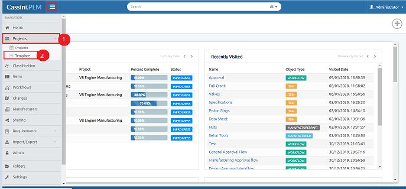

3. Click on "New Template",Popup will appear.
4. Enetr "Name(Mandatory)".
5. Enter "Description".
6. Click on "Create".

How to DELETE a ‘Template’?
1.Click on Delete button related to the template

2.Confirmation dialog box will appear, click on "Ok"

Template is nothing but a clone of any project, if a user wants to create a project that is like any other project, he/she can create a template and reuse it for project creation. This feature will save lot of time and user can have easy access to activities and tasks.
Why do we need to create Template?
Template creation is not a mandatory thing that we need to do in Cassini.PLM, it is an additional feature that will save user time in not to create a project from start, he/she can use template and create a similar new project.
1. Select "Projects" from navigation bar
2. Select "Templates", Template window will open.

3. Click on "New Template",Popup will appear.
4. Enetr "Name(Mandatory)".
5. Enter "Description".
6. Click on "Create".
1.Click on Delete button related to the template
2.Confirmation dialog box will appear, click on "Ok"